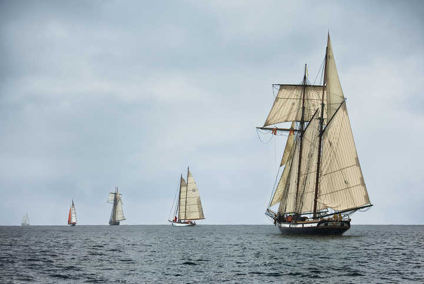

Prodajna Galerija je osnovana 1963. godine s ciljem da izlaže i putem prodaje populariše dela likovne i primenjene umetnosti.
U njenom izlagačkom prostoru su pokazani mnogi radovi počev od najstarijih (Šumanovića, Lubarde, Glišića, Stevanovića,
Golubovića, Milovanovića, Dobrovića, Milunovića, Milosavljevića, Čelebonovića, Tabakovića,
Predića), preko srednje do mlađe generacije (U. Đurić, B. Iljovski, G. Nikolić, S. Markuš),
živo prisutne na našoj likovnoj sceni. Velik broj njihovih dela (na desetine hiljada) našlo
je mesta u muzejima, galerijama i privatnim zbirkama. Bez delovanja galerije na ovom planu
teško je pouzdano tumačiti našu noviju istoriju umetnosti. Galerija danas predstavlja važno
mesto u čijem se izlagačkom prostoru smenjuju izložbe naših poznatih likovnih stvaralaca.